| 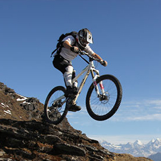 | 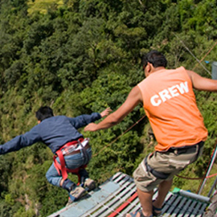 | 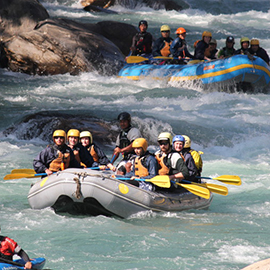 |
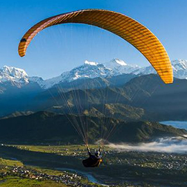 |
|
CYCLING Hurtling down dirt roads on a mountain bike and getting an adrenaline rush is the biggest mountain bikers. And Nepal is just the country for such high spirited people adventure seekers. Beginning right here in the valley, there are endless possibilities for bikers.There are endless rows of hills, waterfalls and spectacuular views of mountains in the background. |
BUNJEE JUMP Bungy jump was restricted to some places in Europe, New Zealand and America, now time has brought so many things funny exiting adventures in the world so we need to be updated as it's time you got chanced and developed. The sport has finally found a natural home in the highest mountain range in the world.Nepal is one of the most popular adventure |
RAFTING Nepal is a land of numerous world class rivers which provide fun and exciting river rafting adventures. You can have a day of rafting or an extended trip that lets you camp on the river and enjoy the culture and beauty that surrounds you. Rafting in Nepal is one of the most popular and it is consider as paradise land for river runners. |
PARAGLIDING Paragliding in Nepal gives an opportunity for aerial view of the Himalayas. A trip will take you over some of the best scenery on earth, as you share airspace with Himalayan griffin vultures, eagles, kites and float over villages, temples, lakes and jungle, with a fantastic view of the majestic Himalaya. Pokhara, the beautiful lakeside town of the Annapurna Mountains offers paragliding services |
| 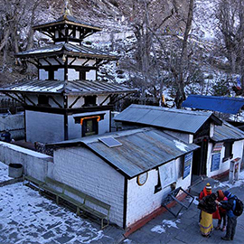 | 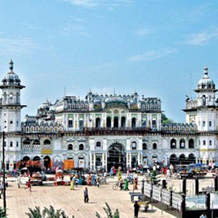 | 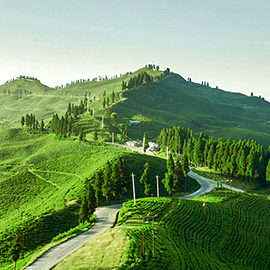 |
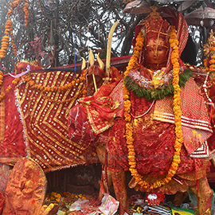 |
|
MUSTANG |
JANAKPUR |
ILLAM |
PATHIBHARA |
| 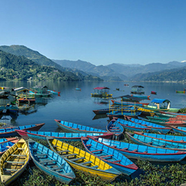 | 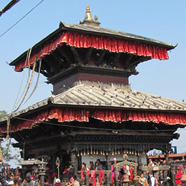 | 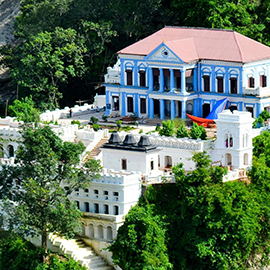 |
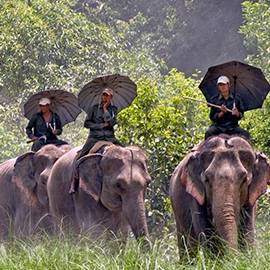 |
|
POKHARA |
MANAKAMANA |
RANI MAHAL |
CHITWAN |
Nepal is home to eight out of the fourteen highest peaks in the world with cultures ranging colorful and intricate Hindus religion to the austerity of the Buddhist monasteries. From the breathtaking heights of the Himalayas the rivers crash down through the foothills, fed by monsoon rains and melting snow, on their way to the Great Plains of the Ganges.
The water is warm and Nepal houses the world’s most thrilling whitewater in a wide range of difficulties with bug free beaches for camping to top it off. Our mountains, Rivers and everything inbetween creates a wealth of unlimited world class opportunities for great river rafting, kayaking, climbing, mountaineering, biking, hiking and the ever popular trekking adventures in Nepal. Nepal has something to offer to everyone.
We are proud to share our wonderful country, culture and our many years of experience adventuring across Nepal with you. We offer unique opportunity to explore Nepal’s remote countryside from the river.
©VISIT NEPAL 2020, All Right Reserved.